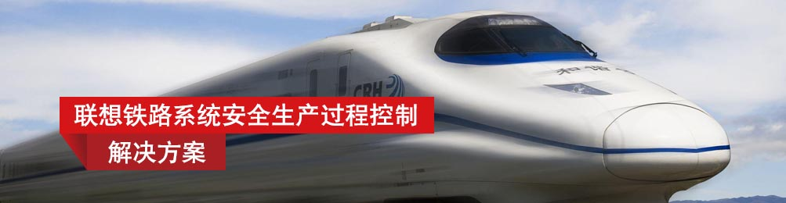
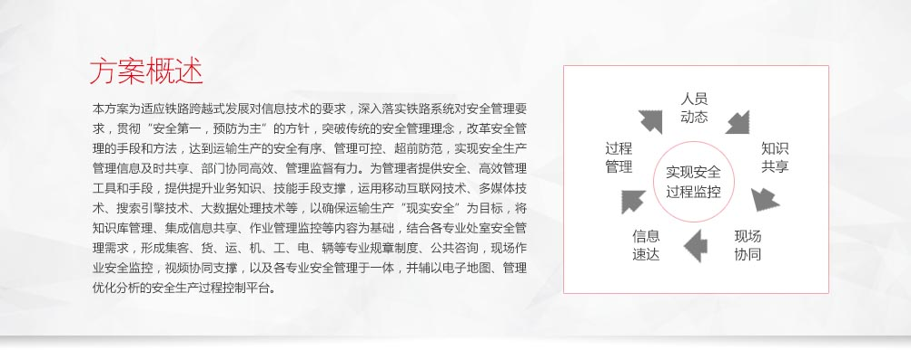
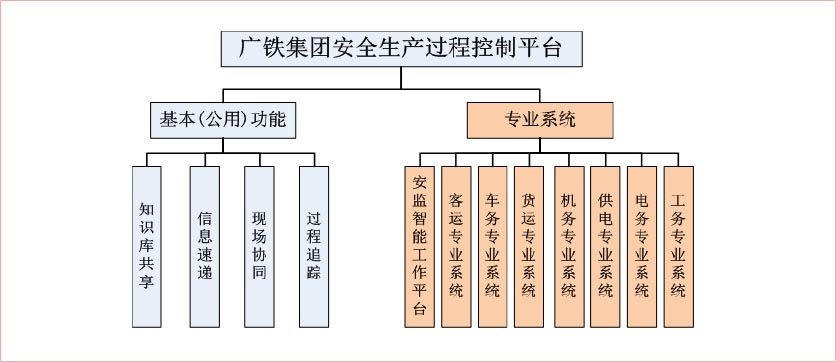
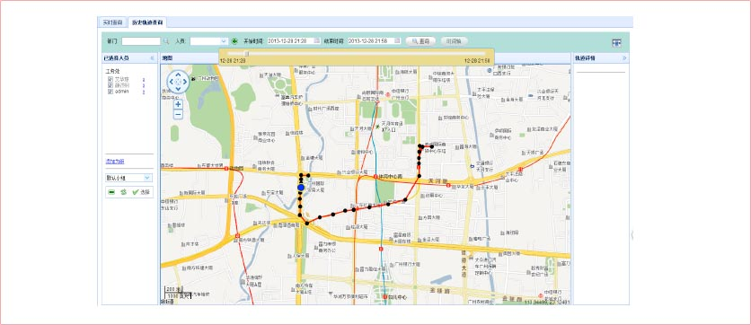
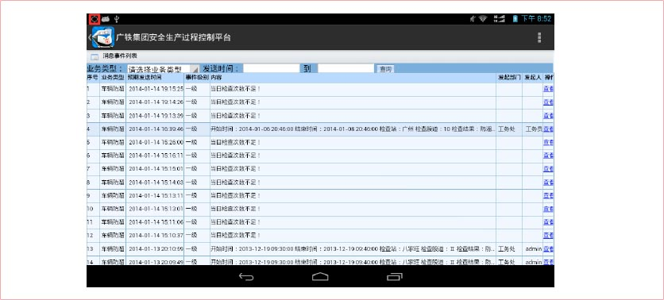

系统特点
功能覆盖车机工电辆，客运、货运、安监等各个层面
实现全方位的安全过程控制
- 人员动态：人员实时、历史的轨迹动态跟踪。
- 知识共享：法规、制度、标准、案例、应急预案等知识共享，知识分专业维护，知识快速检索，支撑指导作业，提升业务技能。专业条线问题分析、文电等知识检索。
- 信息速递：工作重点、施工计划、TDMS计划、18点统计等信息及时递送到处室、站段、车间。
- 现场协同：现场拍照、录音、录像等直观信息及时传递到后台，并可通过视频、语音、文本等形式与一线沟通，指导、协助现场工作。
- 过程管理：工作任务、流程、节点记录跟踪，作业过程、轨迹追溯。结合专业安全流程管理需求，实现计划提醒、实施跟踪、流程监控等安全生产过程辅助管理、决策支持功能。
核心功能
可查询人员实时动态轨迹、人员历史动态轨迹、人员业务轨迹。
大部分管理人员配备PAD，可移动办公，实时处理安全生产任务，查看告警提示。
过程可控
通过获取的运输安全生产人员的不同时间段的地理位置信息，在GIS系统中绘出人员动态轨迹，并结合当时的具体安全生产业务和现场的安全生产设备信息，将安全生产的过程透明化，为安全生产过程管理提供参考依据。
系统集成化
集成了工务，安监等所有专业系统的功能。
数据集成化
集成了铁路集团已有的施工系统、发牌系统等业务数据。

联想移动互联解决方案
联想移动互联解决方案以最终用户的体验为出发点，借助移动互联、大数据分析、云计算等创新技术，通过业务流程的再造，实现了企业资源的合理规划和高效运转。
联想在移动互联领域，通过梳理客户业务流程，整合行业专业应用软件，针对客户的行业特质以及业务需求进行深度定制，目前已储备超过200余项专业解决方案。更多解决方案以及产品、案例、咨询信息，请通过以下入口进入（ID:Lenovomia）：